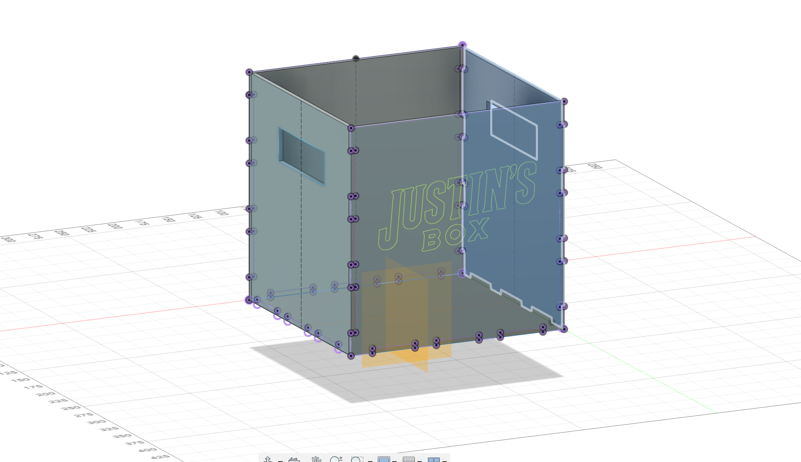
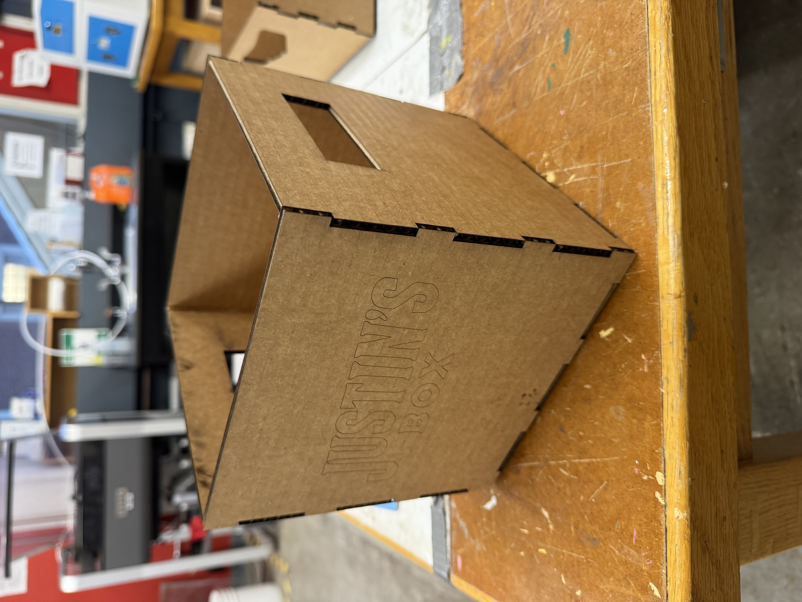

This week's task was to design and build a box to store all our components while we weren't working on them. The goal was to keep the class more organized and prevent everyone's stuff from getting mixed up.
I started with a basic cuboid since that's usually the most practical shape. At first, I went straight into designing the 2D layout, but when I cut it, the pieces didn't fit together right—the finger joints (the "teeth") weren't lining up properly. Since it was tough to visualize everything in 2D, I decided to build a 3D model first, which made translating it into a 2D design much easier.
We also had to account for laser cutter kerf (the material the laser burns away), so I expected to make multiple trips to the cutter to adjust my design. Sure enough, my first attempt needed tweaking. While refining it, I decided to get a bit fancy—I added a simple handle for easy carrying and designed a rastered engraving on the side to help me locate my box quickly. These little upgrades made it more functional and personalized!
This week, we had to level up our Fusion 360 skills by modeling two household items. For my first item, I chose my pencil holder—something that's been with me since home and that I use every day. It doesn't just hold my pens and pencils, but also my Apple Pencil, flash drives, and other random bits and pieces.
To start, I measured the holder using calipers and sketched out its dimensions in Fusion 360. Once I had the base outline, I quickly hollowed out the body using the Revolve tool. After that, I focused on the outer design, carefully measuring and modeling its features. To save myself some time, I used the Circular Pattern tool to repeat the design elements instead of manually recreating each one. That made the whole process way smoother and kept everything symmetrical.
For my second Fusion 360 model, I went with my flat head screwdriver. Surprisingly, this turned out to be trickier than I expected at first. After struggling a bit, I ended up watching a bunch of tutorials, which helped me figure out a solid approach.
I broke the model down into three separate components: the handle, the shank, and the flat head tip.
I started by drawing a simple cylinder. Then, I created a midplane and used the Extrude tool to hollow out part of the handle. Once I had the basic shape, I used the Circular Pattern tool again to add grip details, making my life way easier. To smooth things out, I applied the Fillet tool to round off the edges and the end of the handle. Finally, I used the Ellipse tool to shape the front bezel. For the metal shaft of the screwdriver, I used the Extrude tool to create a long, extended shank. Pretty straightforward. The flat head tip took a little more effort. I used a Three-Point Line to sketch the general shape of the tip, then extruded it outward on both sides while using the Cut function to carve out the flat edges. To make sure everything was symmetrical, I used the Mirror tool over the YZ plane.
← Back to Home